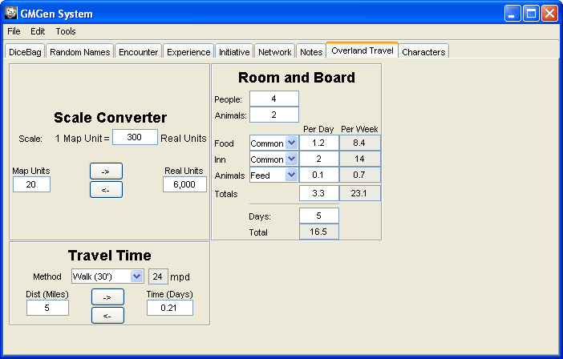

The Overland Travel Tab is a collection of three calculators designed to aid with various aspects of Overland Travel.

Room and Board will calculate the cost of accomedations based on the number of people, animals, days and the quality of the accomedations.
Scale Converter will convert map units into real units.
Travel Time will calculate travel times based on speed and distance.